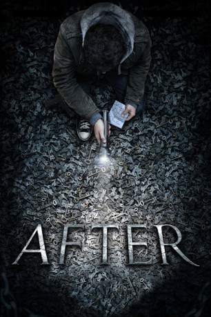
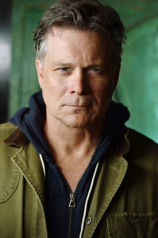
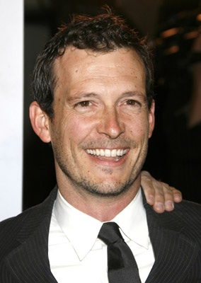

#7786 After
 
 IMDB-Wertung: 5.5 / 10
IMDB-Wertung: 5.5 / 10  Metascore: 0
Metascore: 0 
Freddy und Ana begegnen einander während einer schicksalhaften Fahrt im Bus. Comiczeichner Freddy versucht Ana erfolglos in ein Gespräch zu verwickeln. Doch ehe er mit seinen Flirtversuchen einen Erfolg verbuchen kann, gerät der Bus von der Fahrbahn ab und es kommt zu einem verheerenden Sturz. Wenig später wachen Freddy und Ana mysteriöserweise in ihren eigenen Häusern wieder auf. Schon sehr bald müssen sie feststellen, dass sie die einzig noch verbliebenen Menschen in der ganzen Stadt sind. Sämtliche Außenbezirke sind vollständig von einer Wand aus einem geheimnisvollen, dunklen Nebel umgeben, der langsam aber sicher bis zum Stadtzentrum vordringt. Doch die beiden sind nicht ganz so allein, wie es anfangs scheint: Eine angekettete, knurrende Kreatur ist darauf aus ihnen endgültig den Garaus zu machen.
Jahr: 2012
Dauer: 89 Minuten
FSK: 16
Land: USA Studio: Mongrel MediaTonspuren: DTS - ,
Untertitel:
Auflösung: 1080p (1920x800) Größe: 3543 MB
Genre: Thriller, Drama, Fantasy, Mystery
Regisseur: Ryan Smith
Drehbuch: Jason Parish
Soundtrack: Tyler Smith
Darsteller:
- Steven Strait als Freddy
 Karolina Wydra als Ana
Karolina Wydra als Ana- Madison Lintz als Young Ana
 Sandra Ellis Lafferty als Aunt Lu
Sandra Ellis Lafferty als Aunt Lu-  Ric Reitz als Doctor
-  Jackson Walker als Phil
- Bob Penny als Elderly Man
- April Billingsley als Caretaker
- Sabyn Mayfield als Carnival Attendant
- Jennifer Spriggs als Nurse 1
- Tyrin Niles als Chuck
- Michael Dinardo als Clay
- Chase Presley als Young Freddy
- Jacqueline Springfield als Nurse 2
- Ashley Nicole Blevins als Carnival Patron (uncredited)
- Beth Blevins als Carnival Patron (uncredited)
Datei: X:\2012(A-F)\After (2012, FSK16, 1920x800).mkv seit 19.12.2017
Festplatte: HD 2012(A-M)
 Es gibt insgesamt 102 Filme in der Gruppe '2012(A-F)'
Es gibt insgesamt 102 Filme in der Gruppe '2012(A-F)'